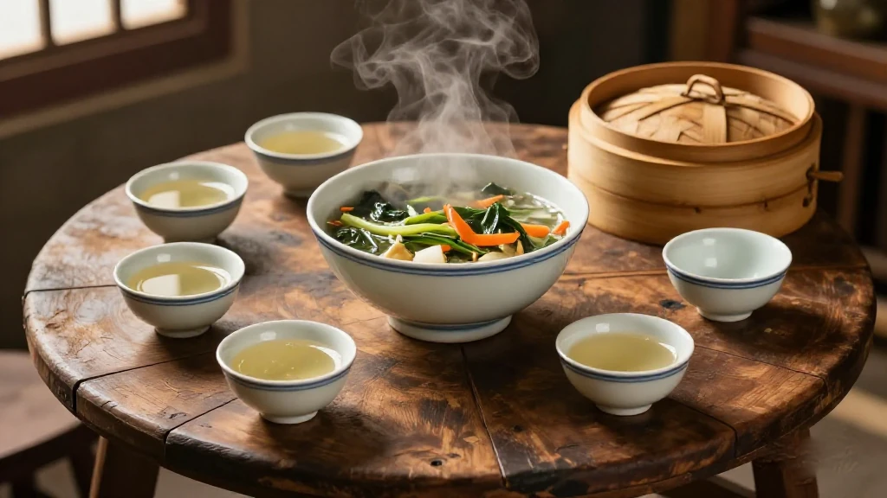
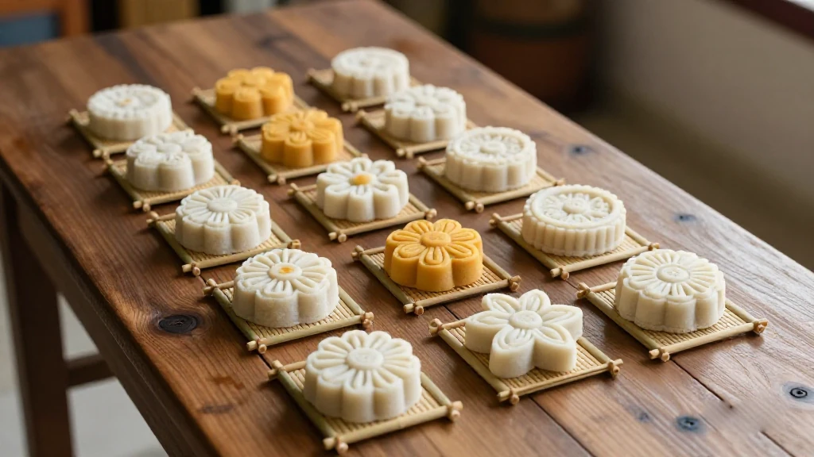
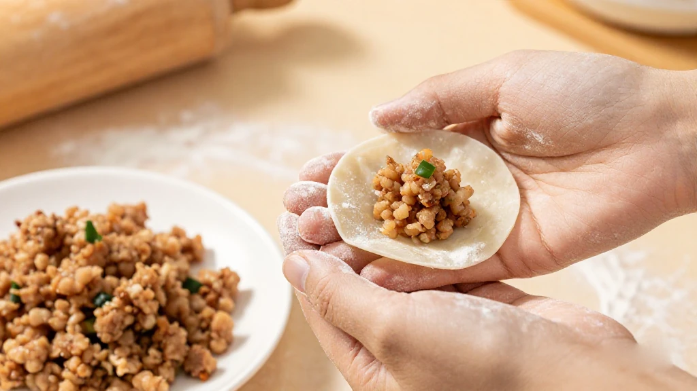
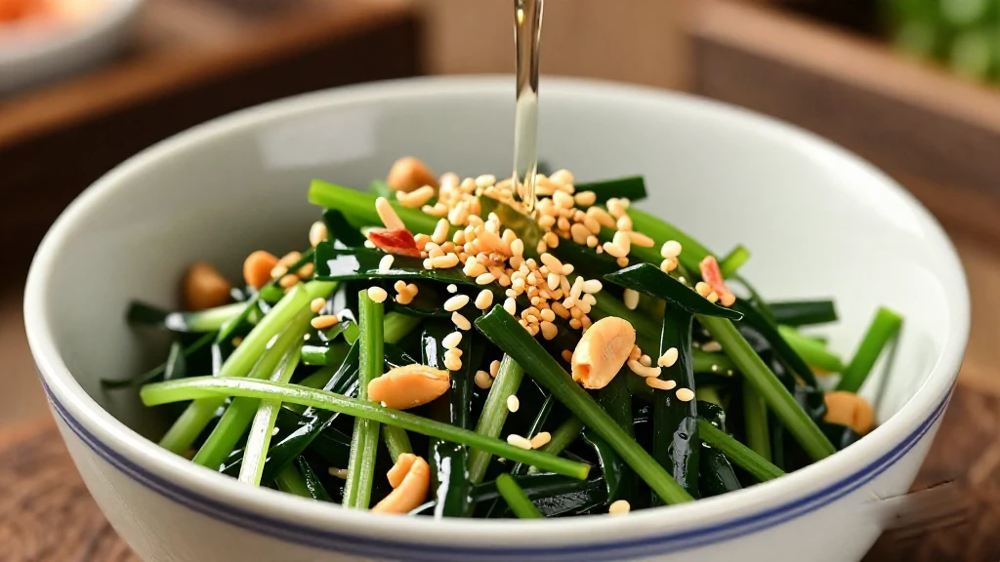
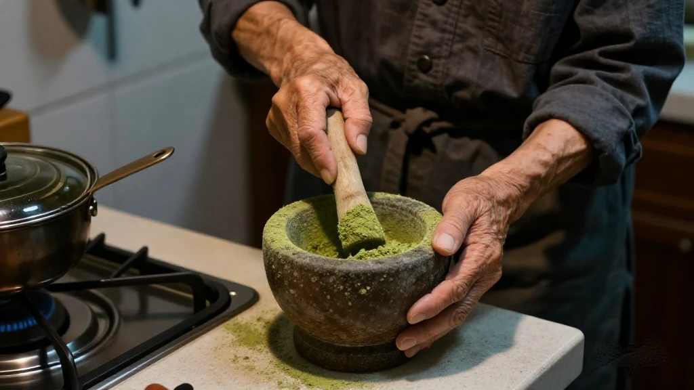

圖片由 AI輔助創作（Z-Image-Turbo）Image by AI (Z-Image-Turbo)
【鄭哥點評】欄目：鄭哥博客點評｜日期：2026-11-04
二馬路係汕尾城區一條老街。夜晚行入去，蒸籠嘅白氣一層疊一層，菜粿、小米、牛肉餅、薄餅，成條街都係味。汕尾人講「食」，從來唔係講貴，係講手勢。海陸豐小吃出名，唔係因為有幾多間名店，而係因為呢個地方嘅婦女，個個都識做幾種粿。

圖片由 AI輔助創作（Z-Image-Turbo）Image by AI (Z-Image-Turbo)
一、百種小吃的底：由祭祀嘅粿講起
《汕尾日報》許宇航寫過一篇〈海陸豐傳統小吃〉，市政府門戶有轉載，開頭就講得好清楚：海陸豐小吃品種豐富、門類齊全，材料涵蓋米、麵、薯、豆、蔬菜、草藥、肉、魚，特色係大米粉同番薯粉製品。而源頭，係傳統拜神拜祖先嘅祭祀供品「粿」，又叫「粄」。
同一篇文話，汕尾小吃不下百種；婦女普遍識做幾種粿點，粿料用米粉（糯米、占米）同番薯粉，有鹹甜兩味，分「歲時節日粿」同「平時小點粿」。呢句其實已經解釋咗點解出咗省就食唔返：一種粿跟節氣走，一種粿跟屋企人走，兩樣都唔跟菜單走。
而家跑得出名嘅單品，報道點名五樣：海豐小米、海豐菜茶、海豐牛肉餅、陸河油茶、梅隴菜粿。市城區二馬路嘅小吃整條街走紅，陸豐就索性打包成一個品牌叫「陸豐味道」。
來源：汕尾日報《【家鄉風物】海陸豐傳統小吃》（許宇航），2025-02-08（汕尾市人民政府門戶轉載）｜https://www.shanwei.gov.cn/shanwei/swly/swtc/content/post_1122072.html

圖片由 AI輔助創作（Z-Image-Turbo）Image by AI (Z-Image-Turbo)
二、小米與菜包粿：手勢嘅精度
小米其實係番薯粉餃，本地又叫餃仔。個名點嚟？報道估係同穗港茶點「燒賣」嘅白話發音有關——兩者都係小布袋狀，分別在燒賣袋口冇扎緊，小米就捏實袋口，外衣亦換成番薯粉。
做法寫得好實淨：番薯粉用滾水沖開，和成粉團做皮；三層肉剁爛，落鹽、豉油、鐵脯（大地魚）粉做餡；包成小米形，上鍋蒸十分鐘左右，開蓋時在表面抹一層油水。出嚟晶瑩、彈牙，標準配搭係一小碟蠔油。海豐人食小米要配牛肉餅，扁身、手打，湯落胡椒粉。
菜包粿以海豐梅隴最出名，去到公平就叫做三角粿，外形唔同、餡多肉。舊時要「時年八節」先做，仲係一份「面前」，即係手信。最考功夫係粿皮：占米粉倒落滾水（加少少鹽同油），翻拌成泥狀，放入盆用手反覆揉搓，捻成圓餅形嘅「粿坯」；左手托坯，右手揸住一粒叫「粿躪」嘅陶球，在坯上打三百六十度圈，壓成薄薄嘅凹狀皮。
餡有蘿蔔絲、椰菜、綠豆芽、沙葛、芹菜、蒜、肉丁、魷脯、蝦乾、花生仁、大地魚粉；包成梭形，頭尾捏緊，排在葦篾或竹篾做嘅「朗埗」上，猛火蒸熟，即刻塗生油、撒芫荽，趁熱食。餡分菜包同魚包兩種，魚包嘅餡係海烏魚做，以金盤圍出品著名。
來源：汕尾日報《【家鄉風物】海陸豐傳統小吃》（許宇航），2025-02-08；海豐縣人民政府門戶《海豐特色小吃三劍客之小米、牛肉餅、菜粿！》，2019-05-15｜http://www.gdhf.gov.cn/gdhf/zjhf/yswh/content/post_263869.html

圖片由 AI輔助創作（Z-Image-Turbo）Image by AI (Z-Image-Turbo)
三、菜茶：一碗裡面嘅時間
菜茶過去一年只有正月有，元宵前後最盛，叫「炒丁茶」。材料係炒熟煮熟嘅豬肉、香腸、鮮蝦、魷魚絲、粉絲、腐竹、白米豆、赤豆、麥粒、菠菜、荷蘭豆，全部切到「適合入口」嘅尺寸，鋪在碗，撒一把花生同炒米，淋淡茶或豬骨湯，落胡椒粉。客家人同海豐公平、陸豐東海一帶就興「飯茶」，即在菜茶裡面加米飯。
呢碗茶有規矩。舊時邊家人上年添咗丁，過年就請街坊鄰里上門食菜茶，所以又叫「男丁茶」；客人會憑碗裡材料嘅厚薄，判斷主人好唔好客。清道光年間海豐舉人黃漢宗有詩：「海豐時俗尚鹹茶，牙缽擎來共一家。厚薄人情何處見，看她多少下芝麻。」
陸河就另一套路數：年初七食「七樣菜茶」，顧名思義要湊齊七種菜。當地年俗有「七不出八不回」，初七唔出遠門，食完呢碗，年就過得七七八八，要出遠門就初八起程。七樣菜茶分兩大類：淨茶即鹹茶，用焙炒過嘅綠茶、生芝麻、炒花生；油茶就係鮮艾葉、軟樟葉、紫蘇、珍珠菜等野菜配搭，炒過之後在帶刻紋嘅陶缽豎式研磨，沖熱水食，茶色蘋果綠。
來源：汕尾日報《【家鄉風物】海陸豐傳統小吃》（許宇航），2025-02-08；汕尾市人民政府《陸河擂茶（七樣菜茶）》，2024-04-19｜https://www.shanwei.gov.cn/slhwz/zjsw/content/post_1030227.html
圖片由 AI輔助創作（Z-Image-Turbo）Image by AI (Z-Image-Turbo)
四、過海之後：清單上嘅第3.57項
菜茶後來過咗海。《香港商報》2021年5月一篇由葉德平寫嘅文章講得明白：「菜茶」獲《香港首份非物質文化遺產清單》收錄在第3.57項，描述係「海陸豐／鶴佬家庭在農曆新年時以菜茶招呼到訪親友」。
「鶴佬」又寫「學佬」「福佬」「河洛」，本來係廣府、客家族群對福建人嘅叫法，後來專指惠州惠東部分地區，同汕尾城區、海豐、陸豐講「福佬話」嘅人。1895年，曾任港府職員嘅歐德禮（E. J. Eitel）在《歐西與中土》一書，把香港島同九龍嘅中國人分成本地、客家、鶴佬三族——即係最遲十九世紀末，福佬人已經在香港。
1949至1970年，大批福佬人以水路同步行方式到港，初時住上環一帶，後來落戶筲箕灣、老虎岩、藍田、觀塘雞寮、慈雲山、鑽石山、牛頭角同柴灣；講福佬話嘅水上人就去了長洲、三門仔、香港仔捕魚。報道引述一位祖籍惠東嘅女士，話自己跟媽媽學做菜茶，媽媽跟奶奶學，「感覺這是一種家庭的延續，也是一種傳承」。
來源：香港商報《海豐時俗尚鹹茶——福佬菜茶》（葉德平），2021-05-26｜https://www.hkcd.com.hk/content_app/2021-05/26/content_1270486.html

圖片由 AI輔助創作（Z-Image-Turbo）Image by AI (Z-Image-Turbo)
五、鄭哥點評
第一，呢啲小吃最值錢嘅地方，唔係味道，係「唔標準」。同一個菜茶，家家有自己配方；同一樣菜包粿，梅隴一個形、公平一個形。規模化最想消滅嘅，正正就係呢種差異——所以你在外地食到嘅「海陸豐菜粿」，多數只係一個形狀。
第二，我最有感嘅係「男丁茶」同黃漢宗嗰句詩。一碗茶落幾多芝麻，就係當年嘅人情賬簿。今日請客睇餐牌同評分，以前請客睇你碗底落幾重手。呢種計法粗，但實在。
第三，菜茶入咗非遺清單，係好事，但清單保得住個名，保唔住個灶。真正令菜茶唔死嘅，係屋企仲有人肯在年初七企在廚房，炒足七樣菜。呢件事，任何政策都代替唔到。
一句到尾：海陸豐小吃唔止係「美食」，佢係一套用米同薯粉寫成嘅日曆——邊個節氣做邊種粿，邊件事請人食邊碗茶，全部有數。你食嘅係一件粿，其實係食返人哋記住時間嘅方法。
圖片由 AI輔助創作（Z-Image-Turbo）Image by AI (Z-Image-Turbo)
\[Zheng Ge's Take\] Column: Zheng Ge's blog commentary | Date: 2026-11-04
Erma Road is an old street in Shanwei's urban district. Walk into it at night and the steam from the baskets rises in layers — vegetable kueh, xiaomi dumplings, beef patties, thin pancakes; the whole street smells of food. When Shanwei people talk about eating, they are never talking about expense. They are talking about handwork. Hailufeng's snacks are famous not because of how many celebrated shops there are, but because the women of this place can each make several kinds of kueh.
圖片由 AI輔助創作（Z-Image-Turbo）Image by AI (Z-Image-Turbo)
1. The base of a hundred snacks: starting from the sacrificial kueh
Xu Yuhang wrote a piece called 'Traditional Snacks of Hailufeng' for the Shanwei Daily, republished on the municipal government portal, and it opens plainly: Hailufeng snacks are varied and complete in range, using rice, wheat, tubers, beans, vegetables, herbs, meat and fish, with rice flour and sweet-potato flour as the signature. The origin, it says, is the sacrificial offering 'kueh' — also called 'ban' — set out for the gods and the ancestors.
The same piece says there are no fewer than a hundred kinds of snack in Shanwei; women commonly know how to make several, from rice flour (glutinous and ordinary) and sweet-potato flour, in savoury and sweet versions, divided into 'festival kueh' and 'everyday kueh'. That sentence already explains why you cannot eat this once you leave the province: one kind follows the ritual calendar, the other follows the household. Neither follows a menu.
The items that have broken out are named in the report as five: Haifeng xiaomi dumplings, Haifeng vegetable tea, Haifeng beef patty, Luhe oil tea and Meilong vegetable kueh. The snack street on Erma Road in the urban district has become famous as a whole, and Lufeng has simply packaged its own into a single brand, 'the taste of Lufeng'.
Source: 汕尾日報《【家鄉風物】海陸豐傳統小吃》（許宇航），2025-02-08（汕尾市人民政府門戶轉載） | https://www.shanwei.gov.cn/shanwei/swly/swtc/content/post_1122072.html
圖片由 AI輔助創作（Z-Image-Turbo）Image by AI (Z-Image-Turbo)
2. Xiaomi dumplings and vegetable kueh: the precision of a hand movement
Xiaomi is really a sweet-potato dumpling, known locally as 'gaozai'. Where the name comes from is a guess the report offers: it may relate to the Cantonese pronunciation of the dim sum 'siu mai', since both are little cloth-bag shapes. The difference is that siu mai is left open at the top, while xiaomi is pinched shut — and the wrapper is swapped for sweet-potato flour.
The method is set out concretely: sweet-potato flour is scalded with boiling water and kneaded into a dough for the wrapper; pork belly is minced and seasoned with salt, soy sauce and 'tiepu' (dried flatfish) powder for the filling; the dumplings are pinched into shape and steamed for about ten minutes, then brushed with oiled water as the lid comes off. They come out translucent and springy, and the standard accompaniment is a small dish of oyster sauce. In Haifeng, xiaomi is eaten with beef patty — flat, hand-beaten, its broth finished with white pepper.
Vegetable kueh is most famous in Meilong, Haifeng; in Gongping the same thing becomes a triangular kueh, different in shape and heavier on meat. In the past it was made only for the eight festivals of the year, and it doubled as a 'mianqian' — a gift to bring when visiting. The skill is all in the wrapper: ordinary rice flour is poured into boiling water with a little salt and oil, stirred to a paste, then kneaded by hand in a basin and rolled into round 'kueh blanks'. The blank sits in the left palm while the right hand takes a clay ball called a 'kuelin' and runs it in a full circle over the dough, pressing it into a thin concave shell.
The filling runs through shredded radish, cabbage, bean sprouts, jicama, celery, garlic, diced pork, dried squid, dried shrimp, peanuts and dried flatfish powder. The whole thing is folded into a spindle, pinched at both ends, laid in order on a bamboo 'langbu' rack and steamed hard over a fierce flame, then brushed with raw oil, scattered with coriander and eaten hot. By filling it divides into vegetable and fish versions — the fish one made with grey mullet, famous from Jinpanwei.
Source: 汕尾日報《【家鄉風物】海陸豐傳統小吃》（許宇航），2025-02-08；海豐縣人民政府門戶《海豐特色小吃三劍客之小米、牛肉餅、菜粿！》，2019-05-15 | http://www.gdhf.gov.cn/gdhf/zjhf/yswh/content/post_263869.html
圖片由 AI輔助創作（Z-Image-Turbo）Image by AI (Z-Image-Turbo)
3. Vegetable tea: a bowl with time inside it
Vegetable tea used to exist for one month a year only, at its height around the Lantern Festival, and was called fried dice tea. The makings are pork, sausage, fresh prawns, shredded squid, glass noodles, bean-curd sticks, white beans, red beans, wheat grains, spinach and snow peas, all cooked and cut to a size fit to lift with chopsticks, laid in a bowl, scattered with peanuts and puffed rice, then flooded with light tea or pork-bone broth and seasoned with white pepper. Among the Hakka, and around Gongping in Haifeng and Donghai in Lufeng, people add rice and call it rice tea.
The bowl has rules. In the old days, any household that had gained a son in the past year would invite the neighbours in over New Year to eat vegetable tea, which is why it is also called male-child tea; and guests would judge the host's generosity by how thick the bowl was with ingredients. In the Daoguang reign, Huang Hanzong, a Haifeng provincial graduate, wrote: Haifeng custom holds salted tea dear; the tooth-marked bowl is raised, one family together. Where else do you see the depth of a man's hospitality? Look how much sesame she lets fall.
Luhe runs it differently. On the seventh day of the new year they eat seven-vegetable tea, which by definition means gathering seven kinds of greens. Local custom holds that on the seventh you do not go out, on the eighth you do not come back, so nobody travelled on the seventh; once this bowl is finished the New Year is more or less over, and the eighth is when you may set off. There are two families of it: clear tea, or salted tea, made from pan-fired green tea, raw sesame and fried peanuts; and oil tea, where fresh mugwort, soft camphor leaf, perilla and pearl vegetable are blended, pan-fired, ground upright in a scored clay mortar and drunk with hot water, the liquor an apple green.
Source: 汕尾日報《【家鄉風物】海陸豐傳統小吃》（許宇航），2025-02-08；汕尾市人民政府《陸河擂茶（七樣菜茶）》，2024-04-19 | https://www.shanwei.gov.cn/slhwz/zjsw/content/post_1030227.html
圖片由 AI輔助創作（Z-Image-Turbo）Image by AI (Z-Image-Turbo)
4. After the crossing: item 3.57 on the list
Vegetable tea crossed the water. In May 2021 the Hong Kong Commercial Daily carried a piece by Yip Tak-ping setting it out: choi cha is entered in Hong Kong's first Intangible Cultural Heritage Inventory as item 3.57, described as Hailufeng and Hoklo families welcoming visiting relatives and friends with vegetable tea at Lunar New Year.
Hoklo, also written Hoklo and Holok, began as what Cantonese and Hakka people called Fujianese, and later came to mean specifically the people of parts of Huidong in Huizhou and of Shanwei's urban district, Haifeng and Lufeng who speak Hoklo. In 1895 E. J. Eitel, once a Hong Kong government officer, published Europe in China, in which he sorted the Chinese of Hong Kong Island and Kowloon into three races: Punti, Hakka and Hoklo. So by the end of the nineteenth century at the latest, Hoklo people were already in Hong Kong.
Between 1949 and 1970 large numbers came by boat and on foot, first settling around Sheung Wan, then in Shau Kei Wan, Lo Fu Ngam, Lam Tin, Kwun Tong Kai Liu, Tsz Wan Shan, Diamond Hill, Ngau Tau Kok and Chai Wan; Hoklo-speaking boat people went to Cheung Chau, Sam Mun Tsai and Aberdeen to fish. The report quotes a woman of Huidong descent saying she learned to make vegetable tea from her mother, who learned from her grandmother: it feels like the continuation of a family, and a kind of inheritance.
Source: 香港商報《海豐時俗尚鹹茶——福佬菜茶》（葉德平），2021-05-26 | https://www.hkcd.com.hk/content_app/2021-05/26/content_1270486.html
圖片由 AI輔助創作（Z-Image-Turbo）Image by AI (Z-Image-Turbo)
5. Zheng Ge's Take
First, the most valuable thing about these snacks is not the taste; it is that they are not standardised. Every household has its own recipe for vegetable tea; the same vegetable kueh is one shape in Meilong and another in Gongping. Standardisation exists precisely to erase that difference, which is why most Hailufeng vegetable kueh eaten elsewhere is only a shape.
Second, what stays with me is male-child tea and Huang Hanzong's poem. How much sesame went into a bowl was the ledger of human feeling in that year. Today you judge a host by the menu and the ratings; then, you judged by how heavy his hand was at the bottom of the bowl. Crude arithmetic, but real.
Third, vegetable tea making the heritage inventory is a good thing, but an inventory keeps the name, not the stove. What actually keeps it alive is that someone in the family is still willing to stand in the kitchen on the seventh day of the new year and fry all seven vegetables. No policy can do that for you.
One line to finish: Hailufeng snacks are not just food. They are a calendar written in rice and sweet-potato flour: which solar term calls for which kueh, which event calls for which bowl of tea, all of it accounted for. You think you are eating a piece of kueh; you are eating someone's way of keeping time.